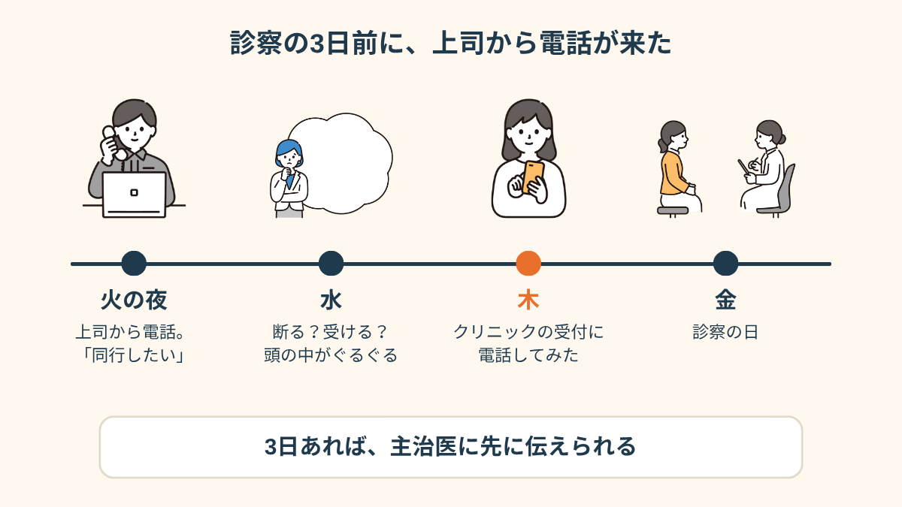
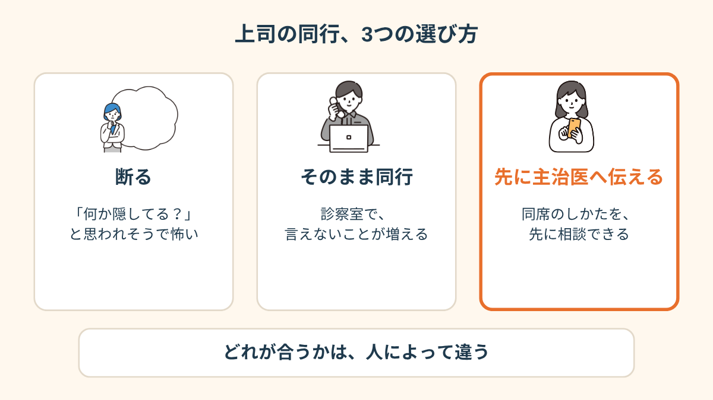
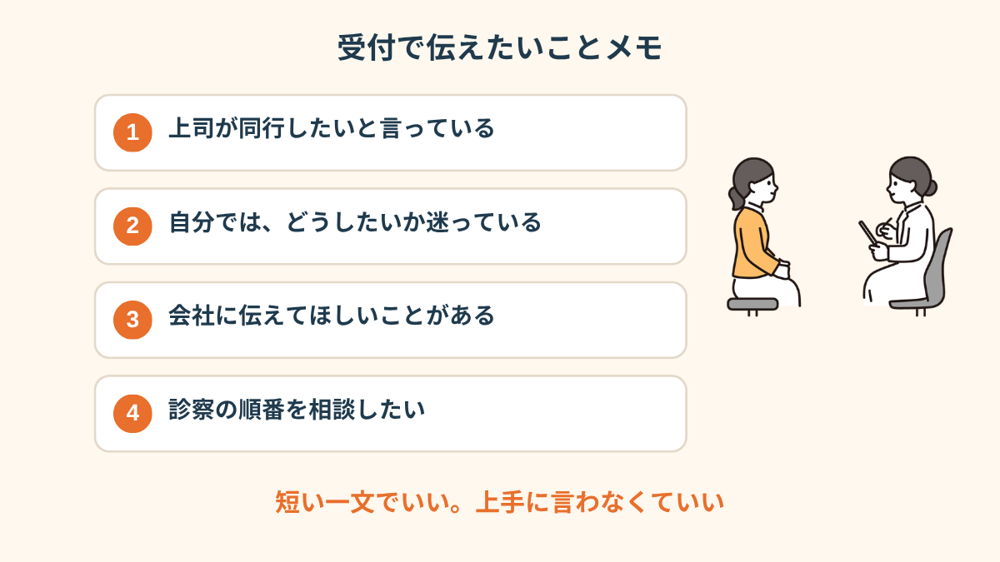
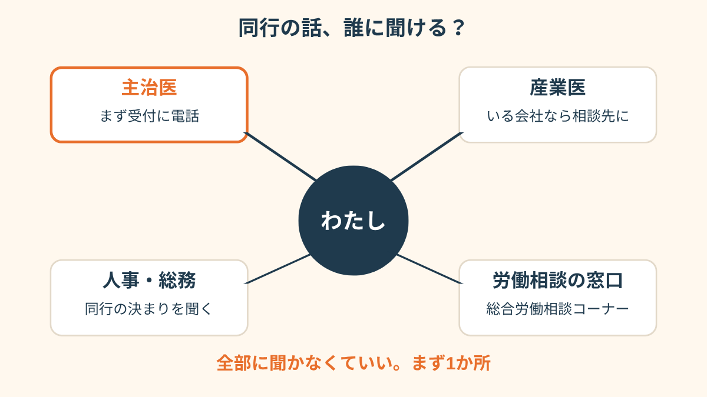
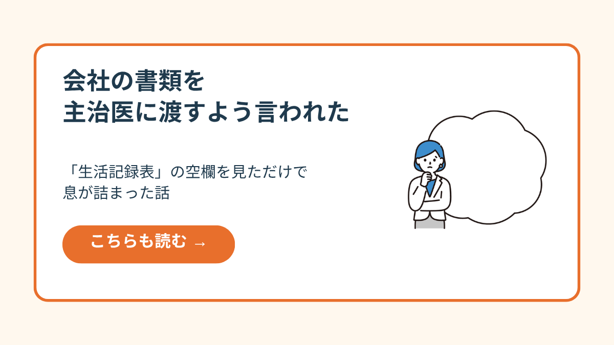
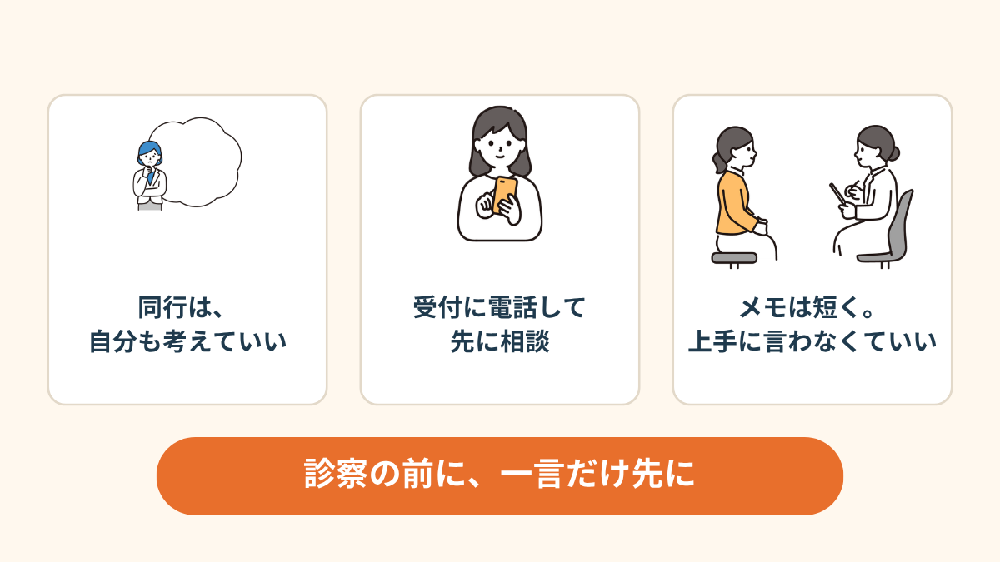

火曜の夜、上司からの電話でした。
診察は、金曜の午前。
私は「あ、はい」と言ってしまいました。
電話は、火曜の夜だった
休職して2ヶ月目。
うつ状態で休んでいて、きっかけは、職場のある先輩とのやりとりでした。
上司は、悪い人ではないと思います。
休職の手続きも早かったし、たまに「どう？」って連絡もくれる。
でも、その「悪い人ではない」人が、診察室に一緒に入ってくる。
想像しただけで、手のひらが湿りました。
電話を切ってから、しばらくスマホを持ったまま固まっていました。
「同行、いいよね？」と聞かれたわけじゃない。もう決まった話として、告げられた感じ。
そこで「困ります」と言える人は、たぶん、そもそも休んでないんだよなと思いました。

断るのも、受けるのも、怖かった
水曜は、ずっと頭の中で会議をしていました。
断ったら、「何か隠してるのかな」と思われないか。
受けたら、診察室で本当のことが言えなくなる。
診断書はもう出ているのに、なんでわざわざ来るんだろう。
でも、復帰のことを考えてくれているのかもしれない、とも思う。
この「かもしれない」が一番しんどい。
相手を悪者にもできないから、自分の気持ちの置き場がなくなるんですよね。

「断れる空気じゃなかったです。『復帰に向けて』って言われると、断る＝復帰したくない、みたいに聞こえちゃって。結局、前の晩まで胃が痛くて、ほとんど寝てません」

受付に電話して、先に伝えた
木曜の午前、クリニックの受付に電話しました。
声が震えるのは分かっていたので、紙に一文だけ書いて、読みました。
「明日の診察に、職場の上司が同行したいと言っています。どうしたらいいか、先生に相談したくて」
受付の人は、少し間をおいて、「先生に伝えておきますね」と言ってくれました。
当日どうするかは、先生と相談して決めましょう、という返事でした。
これだけで、肩の力がだいぶ抜けた。
金曜の診察では、最初の10分は私だけで話して、上司には最後に少し入ってもらう形になりました。
（クリニックによって、対応はけっこう違うようです。これはあくまで私の場合の話です）
言いたいことを、4行にした
電話のあと、手帳に書き出しました。
うまく話せないのは分かっているので、箇条書きで、短く。

上手に言おうとすると、またそこで固まるので。
「迷っている」と、そのまま書いたのが、いちばん楽でした。
「同行の前の日に、先生に『上司に伝えてほしいこと、先に決めておきましょう』って言われて、ああ、そういう使い方があるのか、って。自分で全部言わなくていいんだって思ったら、前の日から気持ちが違いました」
誰に聞けるかを、先に調べた
実は、そのあとの週末に、「そもそも、これって誰に聞いていい話なんだろう」と調べました。
主治医のほかにも、会社に産業医がいる人もいるし、人事や総務に決まりがあるかもしれない。
会社の外にも、労働の相談を受けてくれる窓口があるらしい。
全部に聞こうとしたら、それだけで疲れる。
なので、まず1か所。私は、いちばん話しやすかった受付でした。


会社の書類を、主治医に渡すことになったときの話 →
この記事に、聞いてみたいことはありますか？
「自分の場合はどうなんだろう」と思ったことを、気軽に書いてみてください。いただいた質問は個別にお返事したうえで、匿名で記事にすることがあります。